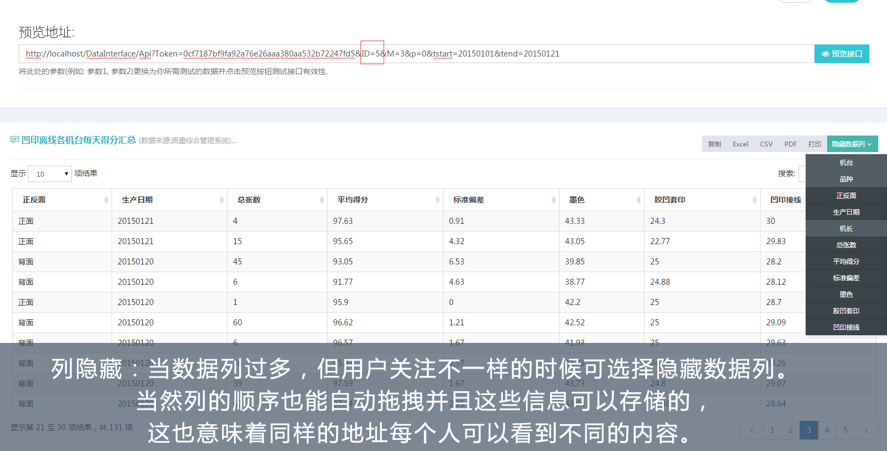
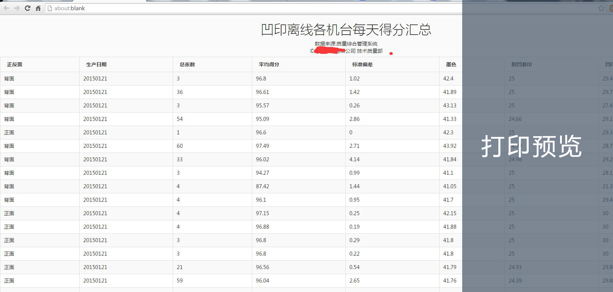
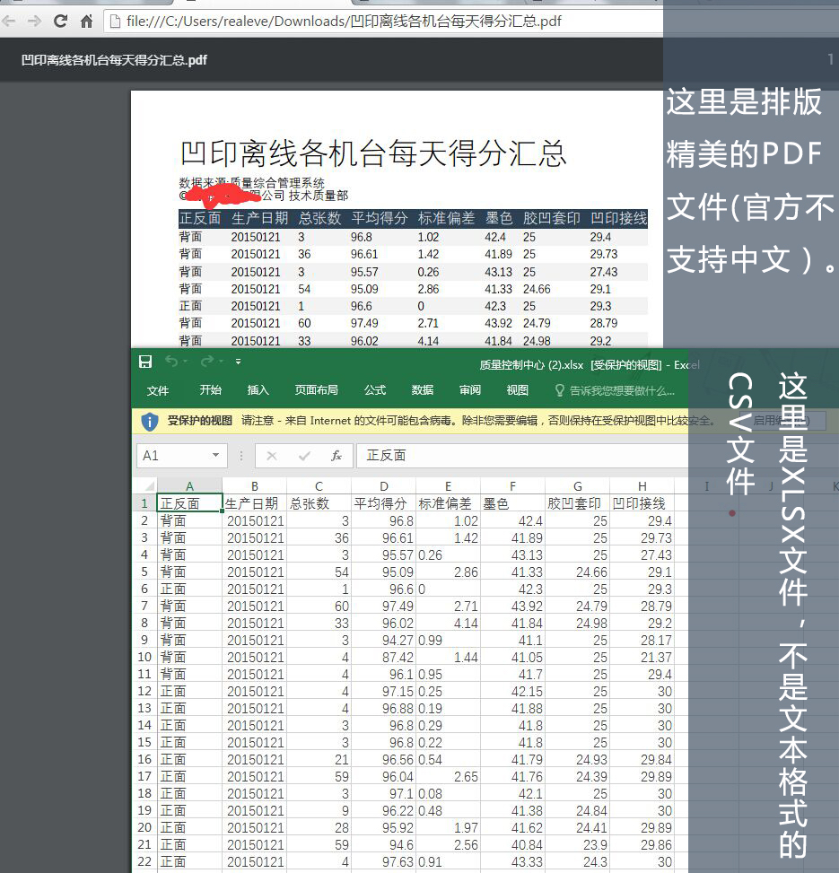
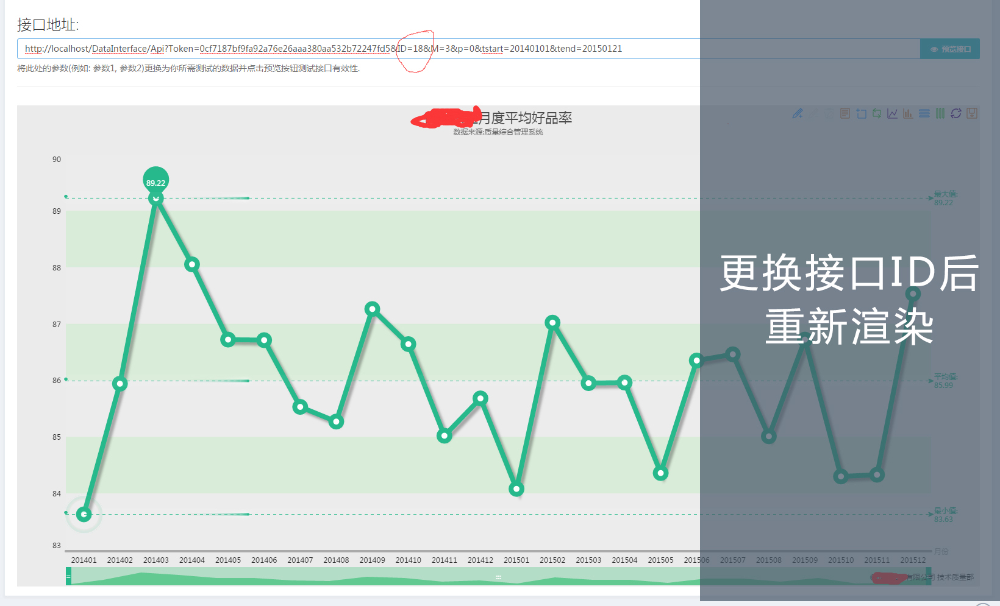
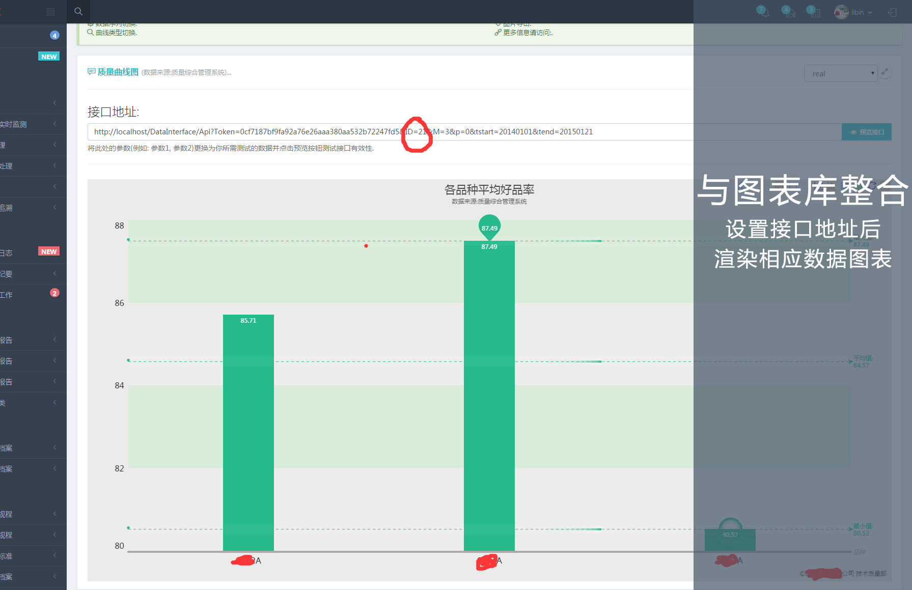

质量信息系统应用与开发交流
李宾
技术质量部 信息技术应用研究室
成都印钞有限公司
主要内容
《关于机检系统的数据分析应用探讨》、《质量控制中心建设》、《Web前端开发》

一、质量信息采集
二、质量信息应用
三、前台开发交流
一、质量信息采集
（一）在整个工艺流程中，我们获取了哪些质量数据?应该采集哪些数据?
1.胶印/凹印
采集数据：大张离线检测系统 舍弃数据：在线质量检测数据
数据量较大、质量较低（表单、大万号的规范等）、系统误报
待增加：在线清数系统——获取产品停机次数
胶、凹印停机对质量的影响
2.印码
采集数据：核查系统质量检测数据
出厂质量控制、数据规范、数据质量较高
要求：在原始质量数据的基础上尽可能详细地提取数据
3.印码人工图像判废
采集数据：判废实废情况
机检实际作废情况、拆包量、判废量等数据
要求：尽可能详细地提取数据
4.检封
采集数据：OCR检验数据 未采集数据：清分机（目前条件暂时不具备）
最终作废情况、实际拆包量
要求：根据需求设计数据采集方案
5.废品分析/特抽班
采集数据：各万产品作废情况
各工序实际作废结果、利于各类报表生成
采集数据：单开分析仪检测数据、防伪指标数据
用于精品分析、报表生成
要求：不能仅局限于报表系统，需要从信息管理的长远出发来考虑。
（二）信息需要被关联及整合
在整合质量数据后，还应关联生产信息的数据（有条件的还可读取对应的状态信息）。
二、质量信息应用
（一）质量信息用来干什么？
加强质量日常管理工作中的沟通，促进信息的流动。
1.质量管理中各类报表的基本需求；
2.质量管理工作的更加精细化；
1.胶凹印大张离线检测数据
1.过程质量控制相关报表
2.各机台对设备的使用情况的掌握
2.印码核查工艺质量数据
1.核查系统的各类质量报表
机检好品率、未检情况、缺陷数、主要缺陷类型、机检误废情况、二次核查剔废率、拆包量、机检实废情况、好品率劳动竞赛信息统计......
2.质量信息远程实时监测/机检设备状态(数据库/硬盘)远程实时监测/模型自动备份等功能
解决人工巡检效率低的问题
3.质量反馈的自动实现
摒弃传统中采用人工分析的方式。主要技术细节：缺陷图的自动匹配选择
3.印码人工图像判废
1.图像判废排活分配
数据上传情况监测、图像判废抽检量监测、判废条数提前获取、排废任务自动分配、判废人员产量统计......
2.机检系统实际质量数据
拆包量（千位/开位缺陷分布情况）、实废量
4.特抽班
1.报表系统
单开分析精品得分、检封裁切精品评价、特抽量监测、机台作业系统数据有效性监测、机读防伪指标采集......
2.主要用于裁切质量分析
设备、班组、机长
5.检封OCR
1.质量闭环控制
未取出、多取出
2.机检系统漏检
多取出信息为漏检信息（默认人工判废可靠），可精确到时间、车号、设备
3.实际拆包量
最准确信息
6.废品分析
1.报表系统
质量考评主要参考数据（绕过清分机）
2.废品分析
产品作废规律分析、机检漏废规律分析等
（二）数据应该可视化，可交互
三、前台开发交流







谢谢观看
李宾
技术质量部 信息技术应用研究室
2016 © CBPC All Rights Reserved.